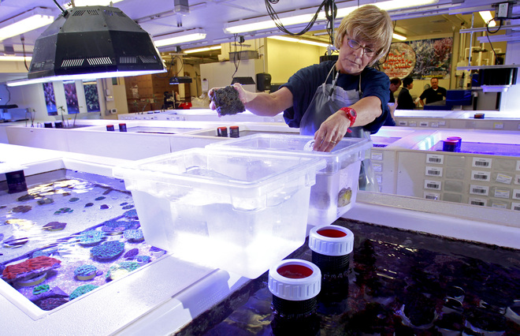

What is Saltwater Aquaculture?
Aquaculture involves cultivating freshwater and saltwater populations under controlled conditions, and can be contrasted with commercial fishing, which is the harvesting of wild fish.

The Saltwater Aquaculture Hobby
Growing up in South Florida, the ocean is a big part of your life, for gosh sake if covers 3 sides of us. As a young boy, ocean conservation was a topic I found extremely interesting as a kid and as the years went on I developed that interest into a hobby. At the age of 14, I bought my first saltwater aquarium with money that I have been saving for years. From this point my hobby really turned into a passion.I felt like a scientist, regulating the water chemistry and temperature to ensure that my fish were happy and healthy. But my hobby did not end there. I began buying live coral, watching them grow and propagating them to produce new coral. It came to the point that I collected so many coral that had grown so much I needed to start selling them to other hobbyists. I profited enough money to cover the entire cost of my original corals. By sharing my corals with other hobbyists, it lowers the demand for wild caught corals and therefore helps conserve wild populations.
Steps to coral Propogation
- Grow the coral in a healthy artificial environment.
- Remove pieces of the coral from the large piece of coral.
- Use adhesive to glue small pieces of coral the a rock to ensure a stable foundation.
- Place new coral frag back in the aquarium in a spot that has good current and is well lit to ensure the coral begins growing and attaching itself to the rock.
- Finally, watch your coral grown!
Coral Species and Hardiness to survive coral Propagation.
| Coral Hardiness | ||
|---|---|---|
| Name | Family | Hardiness |
| Brain Coral | LPS | Moderate |
| Staghorn Coral | SPS | Fragile |
| Button Zoo Coral | Polyp | Extremely |
For other Coral Propagation Tips click here. This is a good website because it has the navigation bar at the top of the page that makes it easy to navigate through the webpage and find what topic you are looking for. The content is formatted in a manner that makes it easy to see what topic is being discussed with a header over the paragraphs. This website is helpful for me because it has picture instructions. This is helpful because I am more of a visual learner. I did not find any bad things about this article.